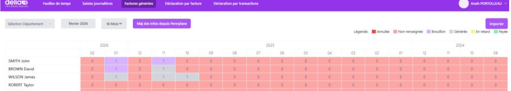
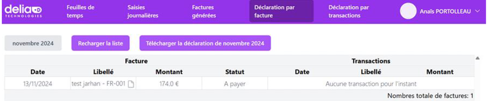
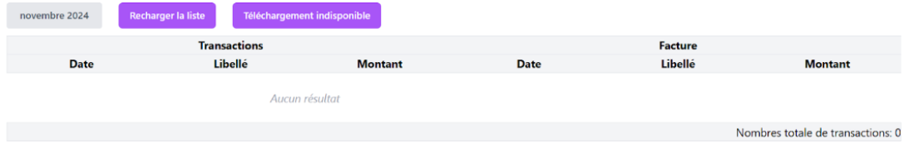

Stage chez Delia Technologies
Stage chez Delia Technologies
1 - Contexte du stage
DELIA TECHNOLOGIES est une ESN (Entreprise de Services du Numérique) fondée en 2019 et située à Nantes. Elle accompagne ses clients dans la
conception, le développement et la maintenance de solutions numériques sur mesure. L’entreprise dispose également d’une seconde structure
créée en 2021 à Rennes.
DELIA TECHNOLOGIES intervient sur des projets variés nécessitant une forte expertise technique, notamment a
utour des technologies JavaScript, Node.js et des API métiers. L’entreprise accorde une importance particulière à la qualité du code, à la
maintenabilité des applications et à l’adaptation aux évolutions technologiques.
Mon stage s’inscrit dans ce contexte de mise à jour
et de migration technique d’applications existantes afin de garantir leur compatibilité avec les nouvelles versions des outils et des API
utilisées.
2 - Découverte du contexte de l'entreprise
Dans le cadre de mon stage, j’ai été amenée à travailler sur une application interne existante nommée Lucas 2 Penny.
Il s’agit d’une application métier qui sert notamment pour la gestion des factures, des données internes de l’entreprise ainsi que certaines fonctionnalités
liées aux collaborateurs (SIRH, anniversaires, listes des collaborateurs, etc.).
À la fin de l’année 2025, une nouvelle version majeure est sortie
ainsi qu’une évolution importante de l’API Pennylane. L’application Lucas 2 Penny n’ayant pas été mise à jour depuis plusieurs mois (dernière migration datant
de juin 2025), une mise en conformité technique était devenue nécessaire pour assurer son bon fonctionnement en 2026.
L’application repose sur deux API externes :
- Lucca, utilisée pour la gestion RH
- Pennylane, utilisée pour la gestion comptable et des factures
Mon rôle a été de contribuer à cette évolution technique en prenant en main le projet existant et en réglant les soucis liés à des méthodes obsolètes ou non fonctionnelles.
3 - Étape 1
J'avais pour mission de mettre à jour l'application existante en corrigeant les problèmes de compatibilité liés à la nouvelle version de l’API Pennylane. En effet, avec la mise à jour annuelle, certaines fonctionnalités étaient devenues obsolètes et ne fonctionnaient plus.
En testant l'application, j’ai constaté que la partie front-end ne fonctionnait plus correctement. J’ai donc dû identifier les erreurs, analyser leur origine et les corriger.
Ensuite, j’ai travaillé sur la partie back-end afin de rétablir la connexion à l’application.
L’accès nécessite un compte Delia Technologies, réservé aux employés. J’ai rencontré plusieurs problèmes
de permissions et d’accès aux données. Une fois ces difficultés résolues, j’ai également dû corriger des erreurs
liées aux API Lucca et Pennylane, indispensables pour tester les fonctionnalités.
Finalement, j’ai pu me connecter correctement et accéder à l’ensemble des fonctionnalités. La partie back-end
fonctionne désormais comme prévu, comme le montre la capture ci-dessous :
4 - Les schémas utiles à la compréhension de mes activités
Fonctionnement de l'application :
L’accès à l’application interne de Delia Technologies nécessite une authentification via le protocole OAuth 2.0.
Une fois connecté, l’utilisateur est redirigé vers la page d’accueil, qui regroupe plusieurs onglets correspondant
aux différentes fonctionnalités.
Dans le cadre du projet, j’ai dû réparer et remettre en fonctionnement les différentes pages de l’application :
- Page Feuille de temps : Je devais vérifier son bon fonctionnement, notamment l’affichage de la liste des salariés et le filtrage par agence (Nantes, Rennes ou les deux), qui fonctionnait correctement.
Page Saisies journalières : Sur cette page, j’ai développé plusieurs fonctionnalités :
-
Ouverture du PDF de la facture :
J’ai mis en place la génération des factures destinées aux salariés et la gestion des différents états :
- Rouge : À facturer
- Orange : Brouillon généré
- Vert : Facturé
- Rattachement de facture : Après avoir cliqué sur « Importer facture », une fenêtre modale s’ouvre. J’ai développé la recherche d’un salarié via son numéro, puis l’association de la facture au mois choisi.
- Génération de CRA : Cette fonctionnalité permet de créer un compte-rendu d’activité. Les jours travaillés sont saisis dans un calendrier, le total est calculé automatiquement, puis le CRA peut être exporté en PDF.
Page Factures générées : Cette page affiche un tableau récapitulatif des mois de l’année, indiquant le nombre de factures générées pour un salarié. Chaque case change de couleur selon l’état de la facture. En cliquant sur un chiffre, l’application affiche la liste complète des factures du salarié, avec possibilité de les consulter, actualiser ou supprimer.
Page Déclarations par facture : Cette page affiche la liste des factures en fonction des transactions.
Page Déclarations par transactions : Elle affiche les transactions associées aux factures. Dans mon cas, le tableau reste vide car aucune donnée correspondante n’est enregistrée dans la base.
Compétences – Tableau de Compétences :
Répondre aux incidents et aux demandes d’assistance et d’évolution
- Correction de bugs front-end, back-end et API
- Collecter, suivre et orienter des demandes à travers les fonctionnalités à corriger ou à faire évoluer
- Traiter des demandes concernant les applications
Organiser son développement professionnel
- Consultation de la documentation Pennylane pour migrer vers la nouvelle version de l’API
- Mettre en œuvre des outils et des stratégies de veille informationnelle